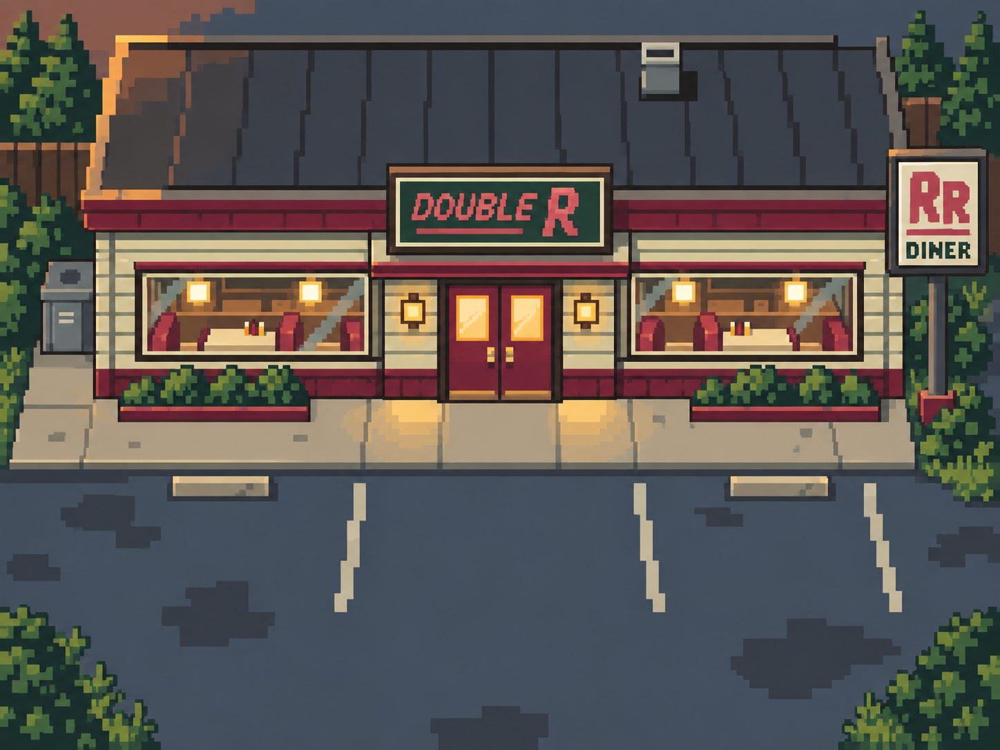
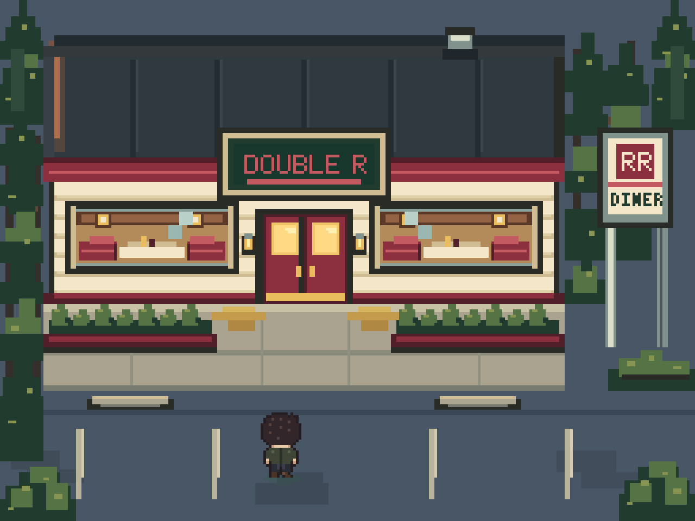
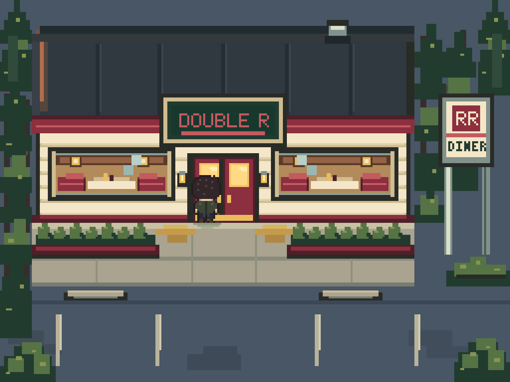
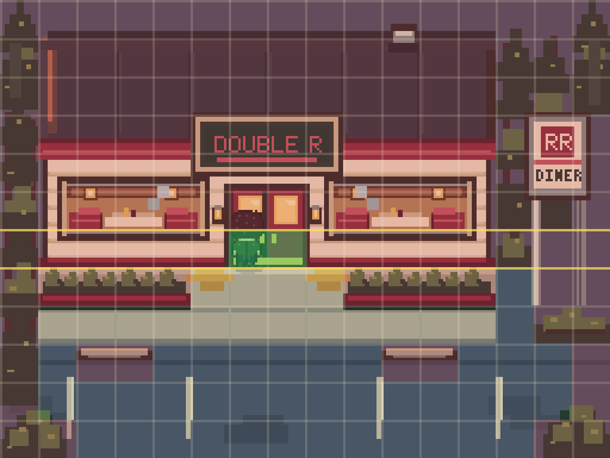

Double R exterior · native validation
One approved composition, rebuilt with native pixel clusters. Existing 24×24 Cooper sprite; 256×192 game canvas.

CONCEPT TARGET · approved v0.1

NATIVE GAME RESULT · integer pixel rendering, player at parkingEntrance and collision evidence

Four actual engine steps from parking to entrance. Transition disabled.
Red cells: blocked. Green cells: entrance trigger. Gold: depth boundaries.Facade presentation remains authored elevation; navigation remains the existing orthographic tile grid. Comparison images fit this page; the playable preview uses integer display scaling.